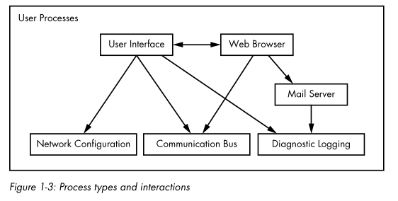

# Linux - System Architecture - User Space
There are 3 levels to user space processes:
•
Top level ◇ applications that users interact with (desktop interface, web browser)
•
Mid level ◇ utility services to top level processes (mail server, printer server)
•
Bottom level ◇ basic services (network config, diagnostics logging)
• There are actually no rules in user space.
• The arrangement above is only an approximation.
◇ For example, programs and services keep logs
◇ Most programs use the standard syslog service to write their logs
▪ but some programs do the logging themselves instead